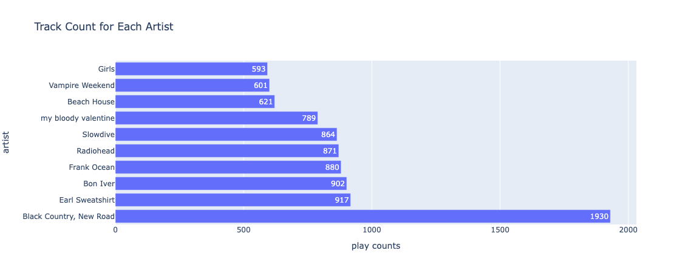
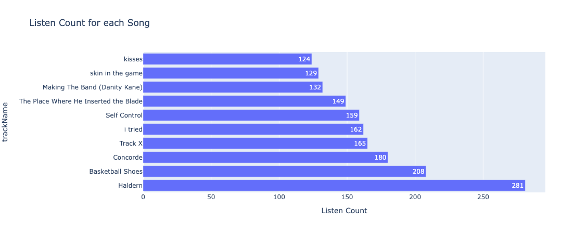
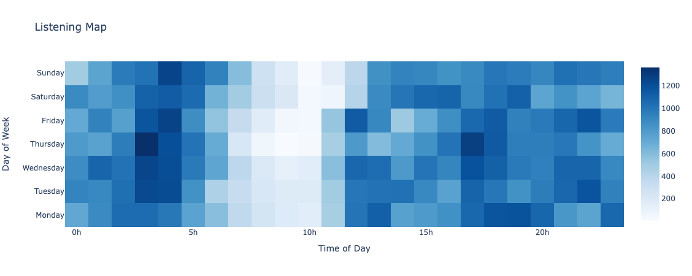

Spotify Wrapped. It’s inescapable, and at this point, probably a little bit overplayed (pun intended). Regardless, we keep coming back for it. It shows, that deep down, people are unsure of themselves and hope that some data collected about them will reaffirm their preconceived notions of self and taste. That’s why people swarm to their Instagram stories to share this information (guilty). This is accusatory in some ways, mostly because I see a lot of the negative aspects of it in myself, but I feel that we might as well get something out of the constant data collection from the companies we let ourselves depend on.
That being said, I love music!! I listen to a lot of music, and from a variety of genres and artists. I also love data visualization and analysis! A bit after Spotify wrapped came out, I requested my data from them and decided to take a peek at it to see if I could visualize many of the same results, and hopefully some new stuff as well.
On a less data driven side of things, I listen to a lot of ‘shoegaze’, a genre defined by really wispy vocals and kind of overwhelming guitars. It is also very similar to a more popular genre, of which I’m a big fan, ‘dream pop’. But I am also big into a lot of newer hip-hop artists, some interesting indie rockers like Yo La Tengo and Black Country, New Road.
The first thing I did when my data came in my email (side note: if you want your data, there is a form you can fill out on the spotify website and they will send you big bundles of .json data for you to parse through) was convert the big .json files they sent me into dataframes and then append the dataframes together. Then I used some simple pandas commands to figure out who my top artists were and how many tracks I listened to per artist. When visualized with plotly.express (my new bae) I got a fun bar graph:

I then figured out which songs were my top songs, where I got some surprising results,

I was not surprised to see 5 tracks in the top ten from Black Country, New Road since they are definitely my favorite artists at the moment and they have put out some brilliant work and I was also unsurprised to see the two Slowdive songs rounding out the top ten, but I was quite surprised to see ‘Making the Band’ by Earl Sweatshirt and ‘i tried’ by slowthai since I did not remember listening to those songs as many times as reported. But then, I looked at the track lengths of ‘Making the Band’ (1:44) and of i tried (2:13) which were considerably shorter than other tracks in my top ten such as ‘Basketball Shoes’ which touches on 13 minutes or ‘The Place Where He Inserted the Blade’ at 8 minutes.
The latest, small investigation I’ve made into this data is to make a heatmap of my listening across times of day against days of the week to get a more discretized view of my listening habits and I was impressed by the visibility of trends.

I had sleeping problems for the first time in my life this year, which led to me being up at strange hours in the night and listening to music to try and fall asleep which accounts for the music being played all the way up to around 5 in the morning, however, since I get up and start studing each day at around 7:30 and had class from around 8:30 to 12:00 most days. But after that, I generally was listening to some sort of music while working on math homework and coding for my classes and then I was definitely listening to music while in the gym.
This is all I have from my preliminary peek at my data for an hour or two, but I will add more once I spend some more time on the analysis.